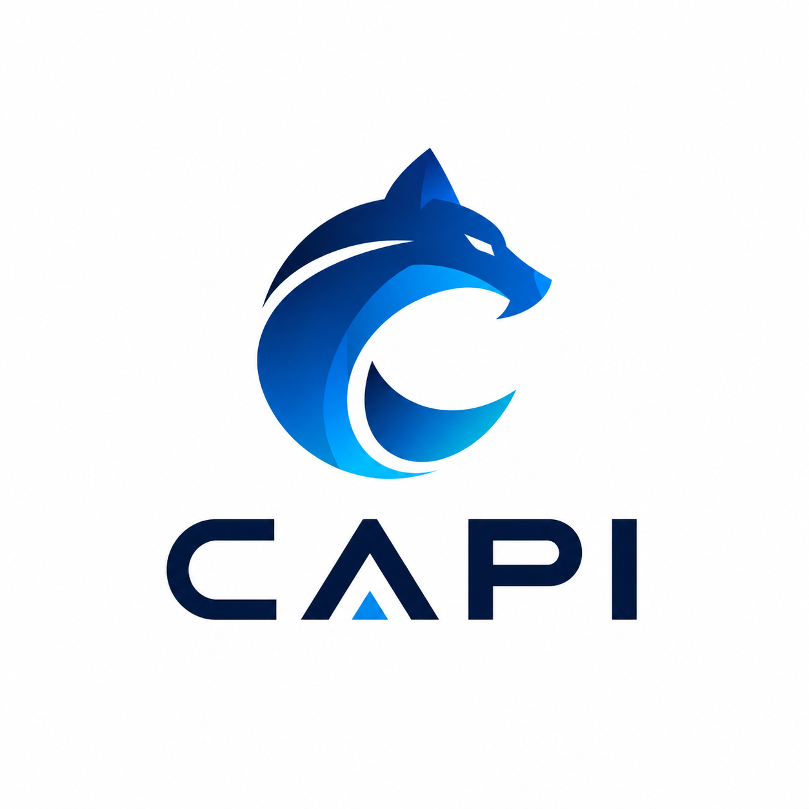

Thoughtful Digital Innovation & Creator Opportunities
We are a dedicated four-member technology company exploring how thoughtful digital experiences can empower traditional creators, artisans, and independent makers to reach wider audiences and connect with people who value authentic craftsmanship.
Tradition & Cultural Heritage
Earth, patience, and generational kiln techniques shaping timeless vessels.
Intricate cultural patterns woven strand by strand with natural dyes.
Organic timber sculpted through hand-chiseled mortise and tenon joinery.
Hand-hammered brass, copper, and precious filigree carrying heritage motifs.
Making rare craftsmanship accessible to the modern world.
We are a four-member company founded on a clear conviction: that the modern digital world should celebrate, preserve, and expand opportunities for authentic human craftsmanship.
In today's fast-moving digital economy, attention is increasingly dominated by industrial mass-production and disposable goods. Behind this noise, master creators, cultural craftsmen, and independent makers continue to preserve traditions that take years to master and reflect genuine cultural heritage.
Yet traditional creators face steep obstacles. They often lack the digital reach, technical tools, or global visibility needed to connect directly with people who truly cherish their artistry.
We exist to change that balance. We believe technology should not replace the human touch; it should honor it. By creating thoughtful digital opportunities, we help traditional creators build sustainable livelihoods while making authentic creations accessible worldwide.
Traditional craft is not merely decorative; it is living history and human expression that deserves respect and continuity.
Makers should not have to sacrifice their techniques, become marketing experts, or surrender their independence to reach patrons.
We build digital experiences designed around empathy, clarity, and genuine human needs rather than cold metrics.
Giving traditional creators a distinguished stage where their stories, techniques, and authenticity are presented with dignity.
Fostering direct bonds between conscious customers who appreciate handmade heritage and the artisans who bring it to life.
Helping cultural craftsmanship remain economically viable for future generations through thoughtful digital accessibility.
We are guided by the ambition to make meaningful creations accessible, sustainable, and celebrated in an increasingly digital world.
Traditional craft requires immense patience, tactile mastery, and intimate knowledge of natural materials. We believe this form of human creativity is irreplaceable. Our purpose is to stand behind creators, ensuring their work is valued not as antiquities, but as vital living art.
Most independent creators remain hidden behind physical distance or fragmented local markets. We focus on elevating visibility—creating digital discovery spaces that tell the real stories behind every piece, highlighting authenticity and human origin.
There is a growing global community of people who look for depth, durability, and cultural meaning in the items they bring into their lives. We aim to build the bridges that bring conscious patrons directly to genuine independent makers.
We reject the premise that heritage and modern innovation are in conflict. By carefully applying modern technology, we can enhance how stories are shared, how provenance is understood, and how cultural artistry finds a sustainable future.
"We are exploring ways to connect traditional creativity with modern digital opportunities, helping creators reach wider audiences and making meaningful creations more accessible."
The principles that orient our decisions, anchor our ambitions, and guide how we build.
"To create an enduring digital bridge between traditional creativity and modern global audiences—where every craftsman's heritage is celebrated and meaningful creations find the appreciation they deserve."
We envision a future where independent makers are not marginalized by algorithmic mass consumption, but recognized as the heartbeat of conscious material culture. We want to see a world where traditional craftsmanship thrives economically and culturally for generations to come.
"To design thoughtful, human-centered digital experiences and technology solutions that empower traditional creators, dismantle barriers to digital reach, and make culturally meaningful craftsmanship accessible to everyone."
Every day, we channel our engineering and design capabilities into understanding the tangible realities of independent creators. We design intuitive digital pathways that respect their time, protect their creative integrity, and introduce their mastery to people who care.
We are not a generalist development shop or a marketing agency. Here is what defines our focus, our philosophy, and why people choose to collaborate with us.
We build technology with explicit purpose. Every decision is measured by whether it genuinely creates value for creators and communities, rather than pursuing tech trends for their own sake.
We take the time to understand the patience, materials, and nuances of physical making. We ensure our digital initiatives honor the maker's voice and the authenticity of their tradition.
Technology should adapt to human beings, not the other way around. We design intuitive, accessible experiences that reduce friction for makers who may have minimal technical background.
Our company brings together contemporary engineering discipline with genuine reverence for cultural heritage, allowing us to build solutions that feel both modern and timeless.
We focus on dependable, practical digital experiences that solve real workflow bottlenecks and expand audience connections, avoiding unnecessary technological overhead.
We operate with genuine humility and curiosity—listening closely to creator feedback, testing assumptions in the real world, and refining our initiatives collaboratively over time.
We are a four-member company united by a shared passion for meaningful digital experiences, human creativity, and cultural craftsmanship.
Co-founder & Product Strategy
Guides product direction, creator research, and ensuring our digital initiatives directly align with the practical realities of independent makers.
Co-founder & Technology Architecture
Directs technical foundations, ensuring accessible, dependable, and lightweight digital experiences that require zero technical complexity from creators.
Co-founder & Brand Experience
Shapes visual storytelling, brand identity, and the aesthetic dialogue between cultural craft traditions and contemporary digital design.
Co-founder & Community Partnerships
Cultivates artisan relationships, maker community engagement, and strategic collaborations that expand opportunities for craft traditions.
While our immediate focus and primary business direction are dedicated to traditional creators and craftsmanship, we maintain an active curiosity toward future digital possibilities. Over time, we are interested in exploring how AI-assisted software and specialized digital solutions can further simplify workflows for independent creators and creative businesses.
Researching respectful, non-invasive digital tools that assist independent makers with cataloging, multilingual storytelling, and administrative overhead.
Exploring intelligent discovery systems that help patrons discover artifacts through material origin, cultural heritage, and verified artisan technique.
Investigating lightweight software models that empower micro-enterprises and artisan cooperatives to operate with enterprise-grade stability.
Whether you are a traditional creator, an artisan collective, a cultural organization, or someone who appreciates authentic craftsmanship, we would love to hear from you.
Share your inquiry, creative background, or partnership thoughts below.